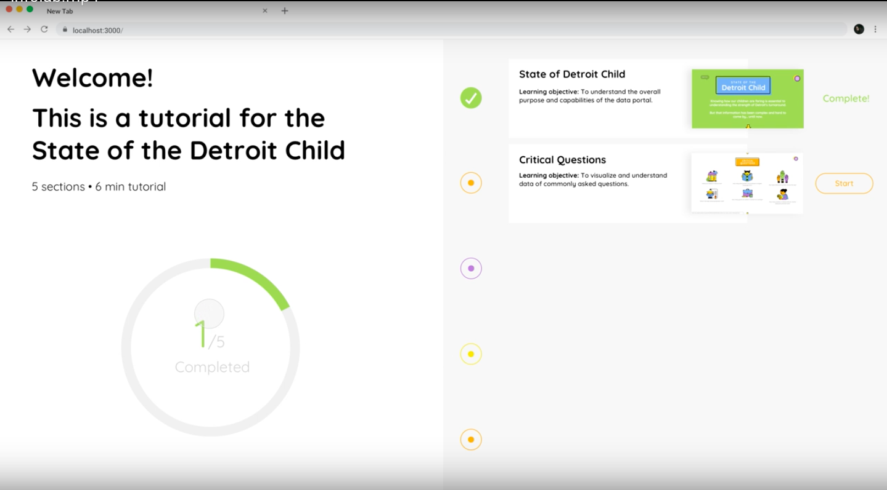
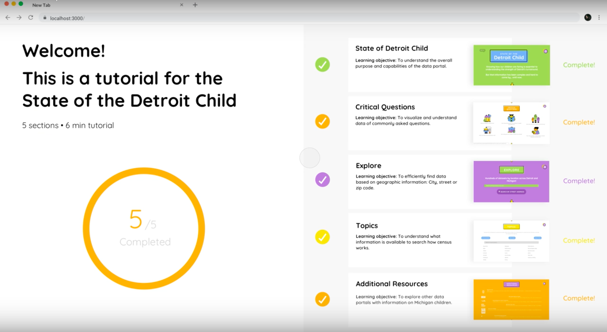
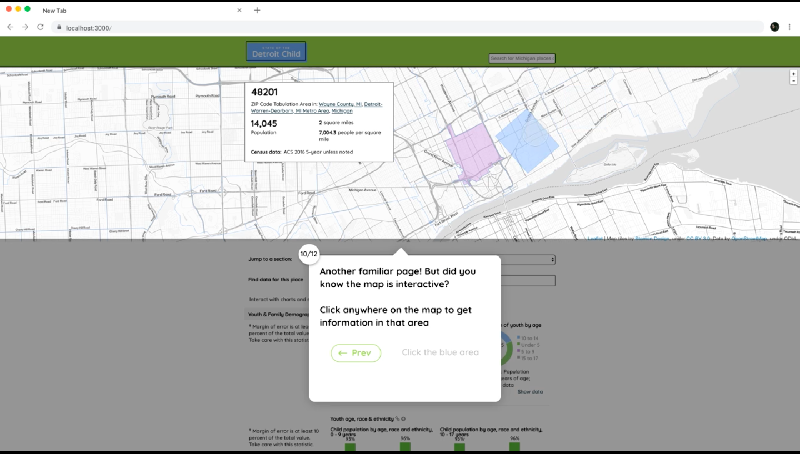

Creating User Friendly Training Modules
Team Members: Oshin Nayak, Hans Lee, Tianny Lu
My Role: Initial ideation, user research, interaction design
INTRODUCTION
Redgate’s SQL Search is an extension of SQL Operations Studio. This is a tool targeted towards a user base with limited SQL knowledge that aims to allow its users to easily parse through fragments of SQL in tables, and quickly navigate through hundreds of objects in a server.
TASK
Data Driven Detroit, an organization seeking to deliver high quality
information in an accessible way in order to facilitate data-backed decision
making by its customers, tasked our team with creating a user-friendly
training module for their open source tool: State of the Detroit Child.
The tool displays and delivers large quantities of complex data about
the community, and the existing tutorial did not adequately facilitate a
seamless and smooth user experience when navigating the tool.
METHODS
Our first step was to analyze the existing tutorial, and identify key
interaction points in order to create a breakdown of the existing user-flow.
We then reviewed the existing user research and conducted stakeholder interviews
to gain insight into what users liked/disliked about the tool.
To then synthesize actionable insights from our research phase, we created
an affinity diagram and categorized our observations.
We were finally able to take our research findings and move into the design
phase. The first step was to ideate as a team, creating hand-drawn sketches
and paper prototypes, which we then translated into low-fidelity wire frames.
After reviewing our sketches, we moved towards creating low-fidelity
wireframes before moving into the higher-fidelity prototyping phase.
After reviewing low-fidelity paper prototypes and wireframes through hallway
usability testing and peer critiques, we constructed a high fidelity prototype
of the tutorial that took all of our findings and research into consideration.
CHALLENGES
This was a valuable lesson regarding working with considerable constraints.
Building a tutorial for a tool that was already launched and in use meant that
we did not have much flexibility in terms of changing the design of the tool.
Therefore, although we wanted to create a solution that rebuilt the
wheel and solved all apparent issues, as designers we had to not meet
stakeholder needs that included not only the users, but the client as well.
This challenged us as designers to ideate and create a solution that
fit within the client’s constraints, while still providing a meaningful
improvement to the users
OUTCOME
The final product was a high fidelity digital prototype that addressed
what we saw as the most pressing usability issues with the existing tutorial.
This included an indication of a user’s progress through the tutorial, the use
of modules rather than pages, providing in-context tooltips, and emphasizing
interactivity rather than static indicators.
The final solution implemented a checkbox and filtering system that was
more conducive to mass selection/modifications of tracked connections.
I also improved the copy of the interface to be more consistent and provide
a more reliable mental reference model for the user.



This ultimately led to a tutorial that made the tool much more learnable
for users and will hopefully lead to a greater rate of user retention for
the client.